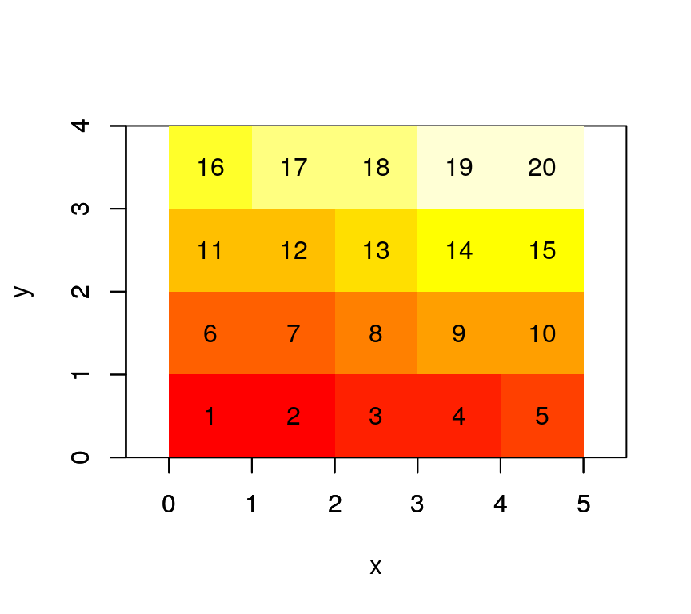
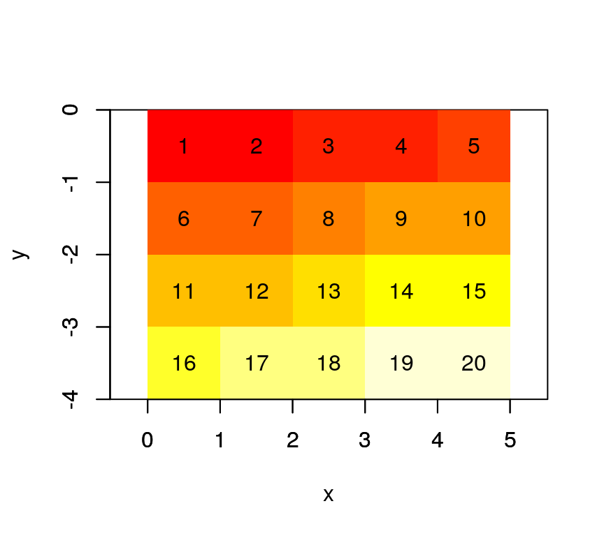
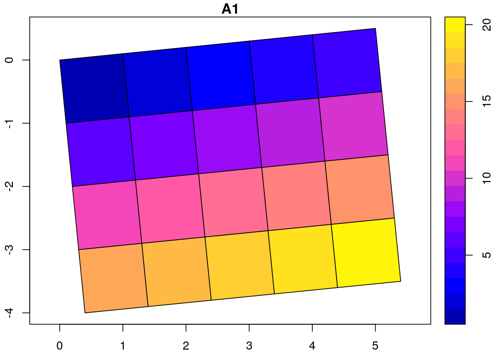
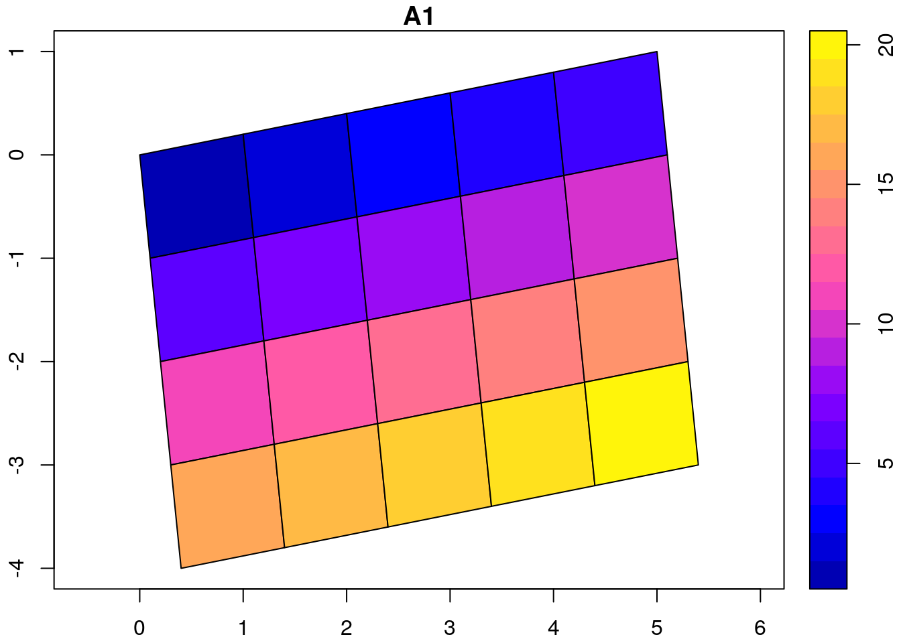
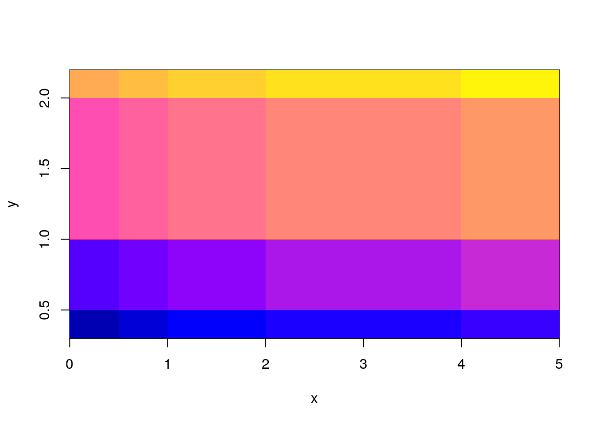
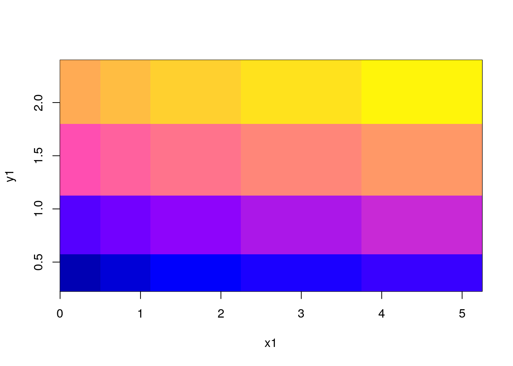

This vignette explains the data model of stars objects, with illustrations.
With a very simple file created from a \(4 \times 5\) matrix
suppressPackageStartupMessages(library(stars))
m = matrix(1:20, nrow = 5, ncol = 4)
dim(m) = c(x = 5, y = 4) # named dim
(s = st_stars(m))
## stars object with 2 dimensions and 1 attribute
## attribute(s):
## A1
## Min. : 1.00
## 1st Qu.: 5.75
## Median :10.50
## Mean :10.50
## 3rd Qu.:15.25
## Max. :20.00
## dimension(s):
## from to offset delta refsys point values
## x 1 5 0 1 NA NA NULL
## y 1 4 0 1 NA NA NULLwe see that
from and to fields of the dimensions are redundant, as they also are present in the array dimension:dim(s[[1]])
## x y
## 5 4When we plot this object, using the image method for stars objects, we see
image(s, text_values = TRUE, axes = TRUE)
Where it becomes clear that \((0,0)\) is the origin of the grid (grid corner), and \(1\) the coordinate value increase from one index (row, col) to the next. It means that consecutive matrix columns represent grid lines, going from south to north. Grids defined this way are regular: grid cell size is constant everywhere.
Most grid data comes with y coordinates (grid rows) going from North to South (top to bottom); this is established using a negative delta. We see that the grid origing \((0,0)\) did not change:
attr(s, "dimensions")$y$delta = -1
attr(s, "dimensions")$x$geotransform[6] = -1
attr(s, "dimensions")$y$geotransform[6] = -1
image(s, text_values = TRUE, axes = TRUE)
An example is the GeoTIFF carried in the package, which has a negative delta for the y-coordinate:
tif = system.file("tif/L7_ETMs.tif", package = "stars")
st_dimensions(st_stars(tif))["y"]
## from to offset delta refsys point values
## y 1 352 9120761 -28.5 +proj=utm +zone=25 +south... FALSE NULLx and y coordinate grids carry a geotransform field, used to compute \(x\) and \(y\) coordinates from grid index \(i\) and \(j\):
\[x = gt_1 + (i-1) gt_2 + (j-1) gt_3\]
\[y = gt_4 + (i-1) gt_5 + (j-1) gt_6\] We can rotate grids by setting \(gt_3\) and \(gt_5\) to a constant, non-zero value:
attr(s, "dimensions")$x$geotransform[c(3,5)] = 0.1
attr(s, "dimensions")$y$geotransform[c(3,5)] = 0.1
# FIXME: use image()
plot(st_as_sf(s, as_points = FALSE), axes = TRUE, nbreaks = 20)
## Warning in classInt::classIntervals(na.omit(values), min(nbreaks, n.unq), :
## n same as number of different finite values\neach different finite value is
## a separate class
The rotation angle, in degrees, is
atan2(0.1, 1) * 180 / pi
## [1] 5.710593Sheared grids are obtained when the two rotation coefficients, \(gt_3\) and \(gt_5\), are unequal:
attr(s, "dimensions")$x$geotransform[c(3,5)] = c(0.1, 0.2)
attr(s, "dimensions")$y$geotransform[c(3,5)] = c(0.1, 0.2)
plot(st_as_sf(s, as_points = FALSE), axes = TRUE, nbreaks = 20)
## Warning in classInt::classIntervals(na.omit(values), min(nbreaks, n.unq), :
## n same as number of different finite values\neach different finite value is
## a separate class
Now, the y-axis and x-axis have different rotation in degrees of respectively
atan2(c(0.1, 0.2), 1) * 180 / pi
## [1] 5.710593 11.309932Rectilinear grids have orthogonal axes, but do not have congruent (equally sized and shaped) cells: each axes has its own irregular subdivision.
x = c(0,0.5,1,2,4,5)
y = c(0.3,0.5,1,2,2.2)
r = st_stars(list(m = m), dimensions = st_dimensions(x = x, y = y))
r
## stars object with 2 dimensions and 1 attribute
## attribute(s):
## m
## Min. : 1.00
## 1st Qu.: 5.75
## Median :10.50
## Mean :10.50
## 3rd Qu.:15.25
## Max. :20.00
## dimension(s):
## from to offset delta refsys point values
## x 1 6 NA NA NA NA 0, ..., 5
## y 1 5 NA NA NA NA 0.3, ..., 2.2
#plot(st_as_sf(r, as_points = FALSE), axes = TRUE, nbreaks = 20)
image(x, y, m, col = sf.colors(21))
x1 = c(0.25,0.75,1.5,3,4.5)
y1 = c(0.4,0.75,1.5,2.1)
image(x1, y1, m, col = sf.colors(21))